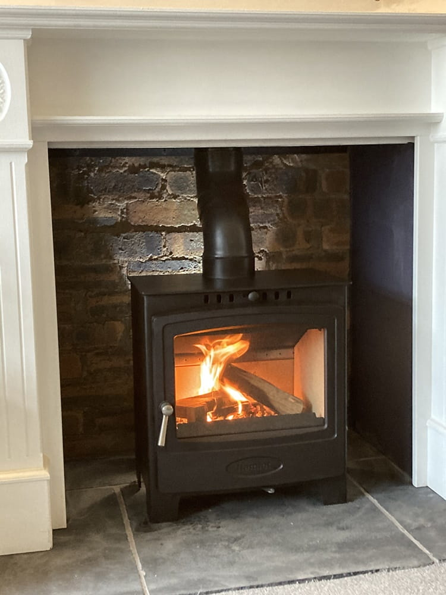
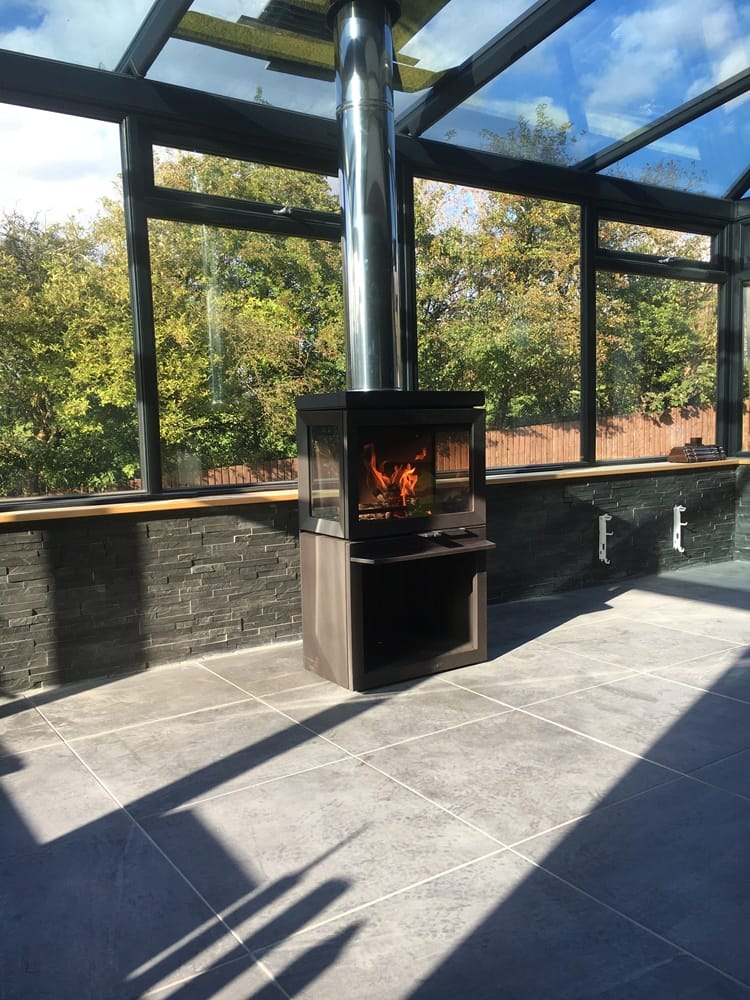

Senior stove installation engineer, Stirling
Solid fuel stoves, hearths and flues in listed and older buildings across central Scotland, with a small team that does it properly.
- Proper craft: stone, old buildings, hand skills
- Trusted to run your own jobs
- A firm with 5.0 from 74 Google reviews
The job at a glance
- Role
- Senior stove installation engineer
- Base
- Stirling, working across Stirling, Glasgow, Edinburgh, Perthshire and Fife
- Work
- Solid fuel stoves, hearths, chambers, flues and chimney linings, much of it in listed and older buildings
- Pay
- [Ben to set the pay band]
- Hours
- [Ben to set]
- Van and tools
- [Ben to confirm]
- How we hire
- Application with photos, a call with Ben, then a trial day on a real job
Not another new-build fitting job
We install solid fuel stoves, fireplaces and flues, and do the stonemasonry and joinery around them. A lot of our work is in listed and older buildings [Ben to confirm the wording, for example Category A and B listed], where nothing is square and the finish has to suit the building.
Real craft, every day
Hearths, chambers, false chimney breasts, liners and twin-wall flues, often in old stone buildings. Hand skills matter here; a router jig will not save you.
A small, top-drawer team
A small team that takes the hard jobs other installers turn down, and does them properly. You will be trusted to run a job.
A firm with a name to protect
5.0 from 74 reviews on Google. Guild of Master Craftsmen member since 2021. We book work in rather than rush it, because reputation comes first.
Why we are fussy about who we hire
In this trade, poor work can kill people and burn houses down. There is no middle ground on quality, so we would rather keep the job open than fill it with the wrong person.
You will fit in if you
- Have years fitting solid fuel stoves, fireplaces or flues [Ben to set the minimum]
- Learned your trade on existing and older buildings, not only new builds
- Can cut a mortise and tenon by hand, and are happy without a nail gun when the job needs it
- Work to building and fire regulations without being reminded
- Leave a finish you would put your name to, and talk to homeowners like a professional
- Can be left alone to run a job
This is probably not for you if
- Most of your experience is on new-build sites
- You rely on nail guns and router jigs for the finish
- You fitted your first stove after a short course and have not done many since
- You want to be told what to do all day
Who you will work with
Ben Kilgour-Manston started Caledonian Stoves in 2019. He is a master carpenter and furniture maker, and has been fitting stoves for about 20 years. You will work alongside him and a small team [Ben to confirm who else is on the team now].


What you get
Set by Ben before this goes live. Every line below is a placeholder, on purpose: we do not guess pay.
Pay
[Pay band]
Hours and days
[Hours]
Van, tools and kit
[Van and tools]
Holidays
[Holidays]
Training
[Any training on offer]
The work itself
Old buildings, stone, hand skills and jobs worth talking about.
How we hire
Quick for you, and fair: you will always hear back.
Apply
Five minutes on your phone.
Photos
Three to five jobs you did yourself.
A call
15 minutes with Ben.
Trial day
On a real job. [Paid: Ben to confirm]
Offer
Then a first month working alongside Ben.
Questions
Do I need HETAS?
Not necessarily. In Scotland it is not a legal requirement to use a HETAS installer, and our view is that a three-day course does not make a stove fitter. Tell us what qualifications you have; what matters most is the work in your photos. [Ben to confirm whether he wants it for this role]
I am a joiner or stonemason, not a stove fitter. Should I apply?
[Ben to decide: if he would train a skilled traditional joiner or stonemason on stoves, say yes here]
Where is the work?
Mostly across Stirling, Glasgow, Edinburgh, Perthshire and Fife, from our workshop in Stirling.
Will I hear back?
Yes. Everyone who applies gets a reply, straight away, and shortlisted people get a call.
Sound like you?
Five minutes on your phone, plus photos of a few jobs you did yourself.